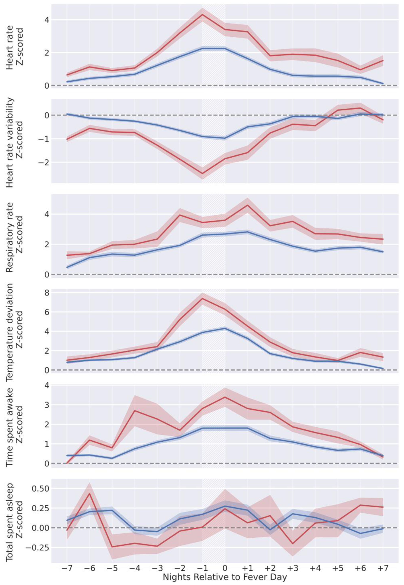

This work aimed to assess the potential of using commercially available wearable devices, specifically the Oura Ring, for syndromic surveillance. We focused on detecting fever as a key indicator of illness. We used Oura Ring data from 63,153 participants (e.g., skin temperature, heart rate, and sleep data) together with daily questionnaires that included information about subjective fever and self-assessed body temperature. We trained a tree-based classifier to classify wearable data as either from fever or non-fever days. Our model performed well, with a AUROC of 0.85 and a false positive rate of 0.8% at a sensitivity of 0.50. These results indicate the feasibility of using wearable data for real-time fever surveillance at a public health level, potentially enhancing the detection and monitoring of disease outbreaks.
Z-score-normalized wearable metrics from individuals, aligned by self-reported fever day (white hatched areas) and grouped by self-reported temperature on fever day. Individuals reporting temperatures in the range of (38–39 °C) are in blue (n = 621), and (39+ °C) are in red (n = 103). Lines represent the mean z-score normalized wearable metric across all participants in the respective group for each night, and shaded regions are the 95% confidence interval of the mean.